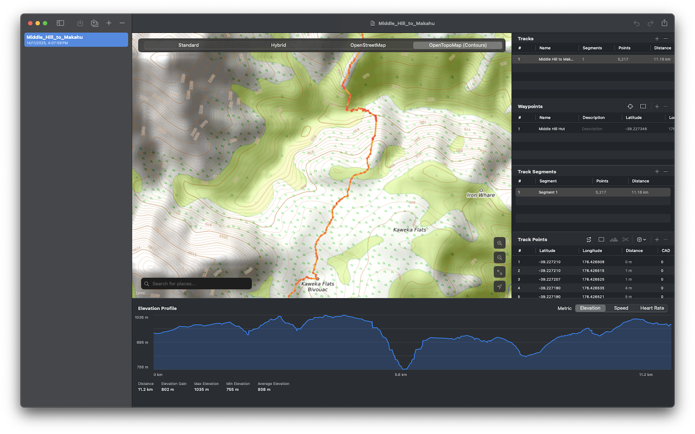

Welcome to Magic GPX Editor
Edit your GPX tracks, waypoints, and routes with an intuitive interface designed for macOS.
Preview
Features
Interactive Map
View and edit your GPX data on an interactive map with multiple map styles including Standard, Hybrid, OpenStreetMap, and OpenTopoMap with contour lines.
Waypoint Management
Add, edit, and organize waypoints with automatic clustering for better readability.
Track Editing
Edit track points, segments, and routes with powerful selection and editing tools.
Elevation Profiles
Visualize elevation data and fetch elevation information from online services.
Undo/Redo
Full undo/redo support for all editing operations.
POI Search
Search for points of interest and add them as waypoints.
Track Optimization
Simplify tracks to approximately 200 points and normalize timestamps based on 4 km/h walking speed.
Merge GPX Files
Combine multiple GPX files into one with full undo support.
Localized Units
Automatic metric or imperial distance display based on your system settings.
How to Use
Open a GPX File
Use File → Open or drag and drop a GPX file into the application.
Edit Your Data
Click on the map to add points, select and edit waypoints, or modify track segments.
Save Your Changes
Use File → Save or ⌘S to save your modifications.
Keyboard Shortcuts
Frequently Asked Questions
What is a GPX file?
GPX (GPS Exchange Format) is an XML-based file format for storing GPS data including waypoints, tracks, and routes. It's widely supported by GPS devices and mapping applications.
Can I import routes?
Yes! Magic GPX Editor automatically converts routes to tracks when importing GPX files, making them easier to edit.
How do I add waypoints?
Click the waypoint mode button (scope icon) in the Waypoints section, then click on the map where you want to add a waypoint. You can also use the plus button to add waypoints programmatically.
Can I fetch elevation data?
Yes! Select track points and click the mountain icon to fetch elevation data from the OpenTopoData API.
What map styles are available?
Magic GPX Editor offers four map styles: Standard (Apple Maps), Hybrid (satellite with labels), OpenStreetMap (free community-maintained maps), and OpenTopoMap (topographic maps with contour lines and elevation shading).
How do I simplify a complex track?
Select a track in the info panel and click the simplify button (waveform icon). The track will be reduced to approximately 200 points while preserving its overall shape using the Douglas-Peucker algorithm.
Can I normalize track times?
Yes! Select a track and click the time normalization button (clock icon). This recalculates timestamps for all track points based on a 4 km/h walking speed, useful for simulating activity data.
Will my files save correctly?
Yes! The app uses security-scoped bookmarks to maintain persistent access to your files. When you import or save a file, the app securely remembers the location so future saves work seamlessly.
Support
Need help? Found a bug? Have a feature request?